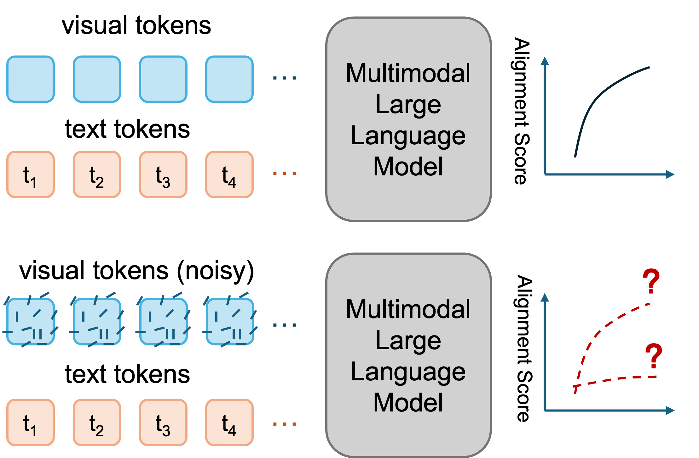

2026-09-24 最新批次续筛，非当日投稿。它在 27 个可穿戴识别模型上用相位随机化刺激区分 DC 与零均值 AC 影响，24/27 个模型中 DC 更具破坏性，为 P1 的跨传感器与跨采样率鲁棒性提供审计工具。
研究背景
由原简报的核心问题、选取理由和相关性整理，不替代原文背景综述。
跨传感器、跨主体部署时，平滑波形攻击可能被误解为时间模式，实际模型只依赖通道偏置。
从本日报的选取理由看，2026-09-24 最新批次续筛，非当日投稿。它在 27 个可穿戴识别模型上用相位随机化刺激区分 DC 与零均值 AC 影响，24/27 个模型中 DC 更具破坏性，为 P1 的跨传感器与跨采样率鲁棒性提供审计工具。
核心问题
如何在不使用测试标签的条件下，区分 DC 偏置与零均值时间变化对识别器的影响？
对当前主题的关键意义在于：对每个聚变诊断通道构造等预算 DC、低频漂移和短暂脉冲，比较 AUC 下降、提前量、ECE 与跨炮次稳定性。
方法与关键创新
在独立校准主体上拟合相位随机化全窗刺激，冻结后分别重放其 DC 投影和受预算约束的 AC 残差。
阅读时需要把方法设计与主要结果一起看：27 个模型上完整刺激造成 2.87 至 40.83 个百分点的稳健准确率下降，24/27 中 DC 更具破坏性，22/27 中 DC 恢复至少 90% 的完整下降。
实验结果
27 个模型上完整刺激造成 2.87 至 40.83 个百分点的稳健准确率下降，24/27 中 DC 更具破坏性，22/27 中 DC 恢复至少 90% 的完整下降。
PolyUMI: Accessible Visual-Tactile-Audio Data Collection for Object Inference and Manipulation
2026-09-24，v1recommend
【P3】原始应用为机器人视觉、触觉、接触音频和本体感觉融合，可迁移模块是同步多传感采集、跨传感器与时间的 token 级 VisTA 策略，以及示教与部署间保持感知几何，对应图像与诊断时序互补前兆。多传感 token 会增加激活显存和融合计算，但同步硬件可减少后端对齐成本。主要风险是聚变诊断无法共享同一感知几何、触觉音频的局部接触先验难迁移。最小实验是在现有可见光 ROI 与两组诊断时序上比较 late fusion、token fusion 和时序查询视觉 token 的 AUC、提前量、缺模态退化、峰值显存与 P95 延迟。
作者 / 机构
Conor W. Hayes, Rickmer Krohn, Aravind Ramaswami, Anunth Ramaswami, Nils Dengler, Kevin M. Lynch, J. Edward Colgate, Georgia Chalvatzaki, Matthew L. Elwin
Fig. 3 : The VisTA model consists of sensor-specific CNN encoders and joint self-attention fusion. The high number of fused conditioning tokens 𝐂 \mathbf{C} , then conditions a flo...
Figure 4: Example router behaviour on a difficult VoiceBank–DEMAND utterance (0.46,dB input SNR, noisiest 5.6 % 5.6\text{\,}\mathrm{\%} of the test set, 65.5 % 65.5\text{\,}\mathrm...
常用对齐指标能否区分真实视觉内容与被噪声破坏的视觉流？
对当前主题的关键意义在于：在 RGB、Event 与诊断时序上做模态置乱、噪声和时间错位干预，同时报告 PA gap、属性 F1、AUC 与校准误差。
方法与关键创新

Figure 1: The alignment illusion. Visual-text alignment scores can remain high even when the visual tokens are corrupted. The model may therefore look internally aligned without re...
对视觉 token 做受控替换，追踪共享 MLP 下投影导致的一维对齐，并提出前两主角余弦之差 PA gap。
阅读时需要把方法设计与主要结果一起看：覆盖五个家族、0.5B 至 72B 的 13 个 MLLM，四种标量不能稳定区分噪声流，PA gap 与分级腐蚀下的任务准确率更一致。
实验结果
覆盖五个家族、0.5B 至 72B 的 13 个 MLLM，四种标量不能稳定区分噪声流，PA gap 与分级腐蚀下的任务准确率更一致。
局限性
PA gap 仍是诊断量，不保证因果融合，也未覆盖事件相机或科学传感器。
总结
内部几何必须与受控任务证据共同解释。
研究相关性与启发
在 RGB、Event 与诊断时序上做模态置乱、噪声和时间错位干预，同时报告 PA gap、属性 F1、AUC 与校准误差。
02
多模态学习 / 图像 / 计算机视觉
M3GD：目标视角几何查询驱动跨模态生成
M3GD: Multi-Modal Multi-View Geometric Diffusion for Camera--LiDAR Novel View Synthesis
如何低成本组合独立预训练的二维和三维基础模型，并保持原生成目标不变？
对当前主题的关键意义在于：将诊断时序状态投影为图像 ROI 查询包，只通过残差适配器注入，比较拼接、cross-attention 与查询包的 AUC、提前量、显存和延迟。
方法与关键创新
Fig. 5: Qualitative RGB and depth comparison on the GrandTour evaluation split. For each scene, the two source images are shown on the left. The middle block compares RGB predictio...
Fig. 5 : Real-robot evaluation. (a) Franka setup with a single camera. (b) Basic pick-and-place, complex-object, and specified-target protocols use 45, 10, and 27 trials per model....
Figure 1 : Training-Free Trajectory-Aware Capacity routing. Top: Offline calibration rolls out the all-large-model reference trajectory and, at every step, evaluates the large and ...
![Figure 4: Example router behaviour on a difficult VoiceBank–DEMAND utterance (0.46,dB input SNR, noisiest 5.6 % 5.6\text{\,}\mathrm{\%} of the test set, 65.5 % 65.5\text{\,}\mathrm{\%} speech-active), repeated four times; the faded first repeat warms the GRU and is discarded. The router spends depth mainly during speech: 74 % 74\text{\,}\mathrm{\%} of speech-inactive frames take the bypass, versus 12 % 12\text{\,}\mathrm{\%} of speech frames, reducing compute by 58.7 % 58.7\text{\,}\mathrm{\%} over the warmed repeats relative to always running the deepest exit.](../assets/figures/8cc6fe13b2a553c0.png)
![Fig. 5: Qualitative RGB and depth comparison on the GrandTour evaluation split. For each scene, the two source images are shown on the left. The middle block compares RGB predictions, and is organized into three rows: feed-forward splatting baselines DepthSplat [ 16 ] , MVSplat [ 15 ] , and PixelSplat [ 14 ] ; diffusion-based baselines Matrix3D [ 73 ] and MVGenMaster [ 74 ] together with the original GLD model [ 8 ] ; and GLD ∗† , our GrandTour-fine-tuned image-only GLD baseline, followed by M3GD and the ground-truth target view. The right block shows the corresponding DA3 depth estimates for the same predicted views and the ground-truth target depth, using the same method layout. Compared with splatting and image-only generative baselines, M3GD better preserves target-view appearance and produces depth maps that more closely follow the ground-truth scene geometry in challenging robot-captured scenes.](../assets/figures/8d76c51a04d784ed.jpeg)
![Figure 1 : Training-Free Trajectory-Aware Capacity routing. Top: Offline calibration rolls out the all-large-model reference trajectory and, at every step, evaluates the large and small checkpoints using the same latent x t x_{t} , timestep, conditioning, and guidance inputs. Their guided-prediction disagreement is aggregated across calibration prompts to produce a switching policy that minimizes disagreement scores. Bottom: Online inference applies that policy while preserving the shared latent representation and scheduler update: quality-sensitive steps keep using the large model (green), while low disagreement steps use the small model (purple), and only one denoiser runs at each step. The method requires no retraining, architecture changes, scheduler changes, or online dual-model evaluation.](../assets/figures/7511aca8adde6b58.png)